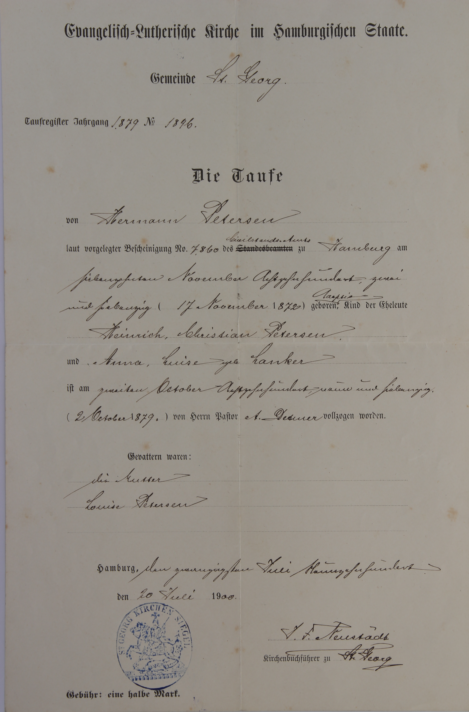

|  | Evangelisch-Lutherische Kirche im Hamburgischen Staate. |
Gemeinde St. Georg | |
Taufregister Jahrgang 1879 No. 1846 | |
Die Taufe | |
Von Hermann Petersen | |
laut vorgelegter Bescheinigung No. 7860 Civilstands-Amts zu Hamburg am | |
| siebzehnten November Achtzehnhundert zwei | |
und siebzig (17. Nov. 1872) geboren (Adoption), Kind der Eheleute | |
Heinrich Christian Petersen, | |
| und Anna Luise, geb. Lanker | |
| ist am 2. Oktober Achtzehnhundert neun und siebzig | |
(2. Oktober 1879) von Herrn Pastor A. Detmer vollzogen worden. | |
Gevattern waren: | |
Die Mutter | |
| Luise Petersen | |
Hamburg, den zwanzigsten Juli Neunzehnhundert | |
den 20 Juli 1900 | |
... | |
Kirchenbuchführer zu St. Georg |